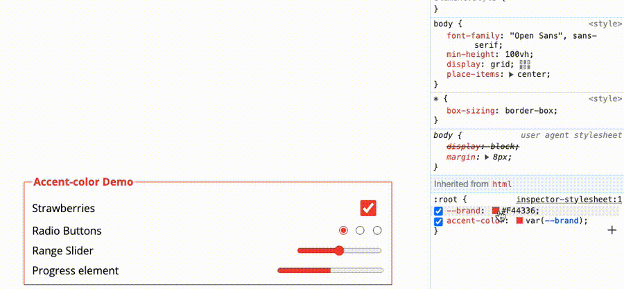
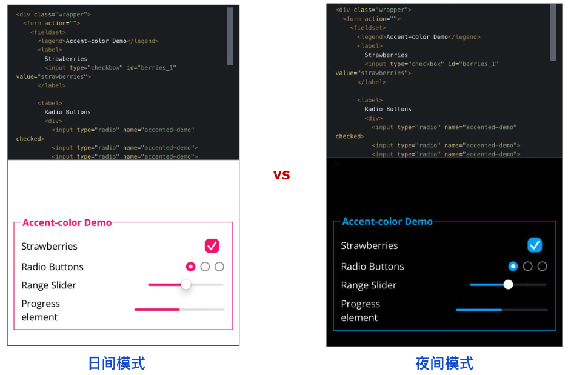

HaoTian · 2024-12-08 17:26:08
accent-color 是从 Chrome 93 开始被得到支持的一个不算太新属性。之前一直没有好好介绍一下这个属性。直到最近在给一些系统整体切换主题色的时候，更深入的了解了一下这个属性。
简单而言，CSS accent-color 支持使用几行简单的 CSS 为表单元素着色，是的，只需几行代码就可以将主题颜色应用到页面的表单输入。
表单元素一直被吐槽很难自定义。而 accent-color 就是规范非常大的一个改变，我们开始能更多的自定义原生的表单的样式了！
accent-colorOK，我们一起来学习一下，我们应该如何使用 accent-color。
首先，我们来实现这么一个简单的表单界面：
<div class="wrapper">
<form action="">
<fieldset>
<legend>Accent-color Demo</legend>
<label>
Strawberries
<input type="checkbox" id="berries_1" value="strawberries" />
</label>
<label>
Radio Buttons
<div>
<input type="radio" name="accented-demo" checked />
<input type="radio" name="accented-demo" />
<input type="radio" name="accented-demo" />
</div>
</label>
<label>
Range Slider
<input type="range" />
</label>
<label>
Progress element
<progress max="100" value="50">50%</progress>
</label>
</fieldset>
</form>
</div>
只需要最简单的布局 CSS，与 accent-color 关系不大，我就不列出来了，这样，我们的 DEMO 大致如下：
可以看到，表单控件的主题颜色是蓝色，在之前，我们是没办法修改这个颜色的。
而现在，我们可以简单的借助 accent-color，修改表单的主题色：
:root {
accent-color: rgba(250, 15, 117);
}
其中，rgba(250, 15, 117) 表示粉色，此时，整体的效果就变成了：
当然，这个 accent-color 也支持传入 CSS 变量，配合更多的其他颜色一起进行修改。
我们可以对上述的 DEMO 再简单改造：
:root {
--brand: rgba(250, 15, 117);
accent-color: var(--brand);
}
fieldset {
border: 1px solid var(--brand);
}
legend {
color: var(--brand);
}
我们设置了一个 CSS 变量 --brand: rgba(250, 15, 117)，除了把这个颜色赋值给表单的 accent-color，还能赋值给其它更多元素。譬如这里，我们赋值给了 <fieldset> 的边框色和 <legend> 的文字颜色。
这样，当我们修改 CSS 变量值时，整个主题色会一起发生变化：
完整的 DEMO，你可以戳这：CodePen Demo -- Accent-color with custom property
通常而言，更多的时候，我们会将 accent-color 应用于：
还有一个容易忽略的细节点。accent-color 还支持和 color-scheme 一起使用。
OK，什么是 color-scheme 呢？color-scheme 是 CSS 的一个属性，用于指定网页的颜色方案或主题。它定义了网页元素应该使用哪种颜色方案来呈现内容。
color-scheme 属性有以下几个可能的取值：
通过指定适当的 color-scheme 值，开发者可以为网页提供不同的颜色方案，以适应用户的偏好或操作系统的设置。这有助于提供更好的可访问性和用户体验。
譬如，我们可以将页面的 color-schema 设置为 light dark：
body {
color-scheme: light dark;
}
上述代码表示页面将同时支持浅色和深色颜色方案。它告诉浏览器，网页希望适应用户代理（浏览器）的默认颜色方案，并同时支持浅色和深色模式。
当使用 color-scheme: light dark 时，浏览器会根据用户代理的默认颜色方案来选择适当的颜色方案。如果用户代理处于浅色模式，网页将使用浅色颜色方案来呈现内容；如果用户代理处于深色模式，网页将使用深色颜色方案来呈现内容。
此时，我们的代码可以这样改造：
:root {
--brand: rgba(250, 15, 117, 1);
accent-color: var(--brand);
}
@media (prefers-color-scheme: dark) {
:root {
--brand: rgba(3, 169, 244, 1);
}
body {
background: #000;
color: #fff;
}
}
body {
color-scheme: light dark;
}
下面是我在手机上调整日间模式和夜间模式的效果图：
通过 @media (prefers-color-scheme: dark) {} 媒体查询，在黑夜模式下，展示不同的 accent-color。
可能有人对
@media (prefers-color-scheme: dark)还不太了解，可以看看我的这篇文章 -- 使用 CSS prefers-* 规范，提升网站的可访问性与健壮性
完整的 DEMO，你可以戳这：CodePen Demo -- Accent-color with custom property